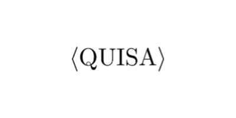

Optimisation
Portfolios, bond funds, regulatory capital, payment ordering, green compute scheduling.
Track sponsor: available
2027 Special Programme · Black Swan Summit Australia
Tested in the open
A global challenge to find where quantum computing adds value on real financial problems today. Problems are set by financial institutions, run on partner compute and reviewed independently.
Launching 18 November 2026 at the Singapore FinTech Festival
Four tracks
Each track starts from problems financial institutions actually face. Every result is compared with a strong classical baseline, so the evidence stands up.
Portfolios, bond funds, regulatory capital, payment ordering, green compute scheduling.
Track sponsor: available
Card-fraud detection, trade-fill prediction, robustness under attack.
Track sponsor: available
Option pricing, value at risk, hardware resource estimation.
Track sponsor: available
Stablecoins, tokenised assets and settlement.
Track sponsor: available
Why it’s different
Quantum claims are easy to make and hard to test. The Q-FINEX Challenge brings together the three things credible evidence needs, and puts the results in front of the people who act on them.
Set by financial institutions, drawing on GFTN’s global network of forums, institutions and partners.
Results reviewed at UWA, drawing on QUISA’s global network of research and quantum industry partners. Sponsors do not score.
Partner hardware, software and infrastructure for every team. Runs on the Q-FINEX testbed and continues beyond the event.
Results, awards and the winners’ showcase at Black Swan Summit, with promising teams meeting problem owners after the Summit.
Black Swan Summit Australia is where quantum in finance is tested, not just discussed.
Find your place
You bring
A real problem you want answered.
You get
You bring
Hardware, software, infrastructure or security, plus expert mentors.
You get
You bring
Your team, your ideas and your code.
You get
How it works
18 Nov 2026
Launch at SFF. Registration and team matching open.
Starting nowNov 2026–Jan 2027
Teams submit concepts. Concepts close in January.
Feb–Mar 2027
Shortlisted teams build with mentors. Results independently reviewed at UWA.
6 Apr 2027
Results, awards and the winners’ showcase at Black Swan Summit.
Who can enter? Teams of 2–5 from anywhere: students, researchers, developers, quants and fintechs. Individuals can register and be matched to a team.
Your choice of technology. Our technology partners' platforms are offered and recommended, but teams can use any quantum or classical tools they prefer.
Partner on the Challenge
Put your institution or platform at the centre of the evidence on quantum in finance. Additional problem owners by invitation.
1 available, exclusive
“Q-FINEX Challenge presented by [Partner]”
Ideal for a bank, insurer, super fund or market operator that wants to own the problem and the results.
Talk to the team4 available, 1 per track
“[Track] presented by [Partner]”
Ideal for a bank, exchange, payments firm, stablecoin issuer, tokenisation platform or technology vendor.
Talk to the team4 available, 1 per category
“Built on [Partner]”
Recommended, not required. Partners are promoted as the Challenge's technology of choice. Teams remain free to use other tools.
Ideal for quantum computer makers, HPC, GPU and cloud providers, quantum software and AI companies, and post-quantum security or network providers.
Talk to the teamBring a problem, a platform or a team. Launching at the Singapore FinTech Festival on 18 November 2026, with results in Perth on 6 April 2027.
Host
Academic administrator

Partners and sponsors
To be announced